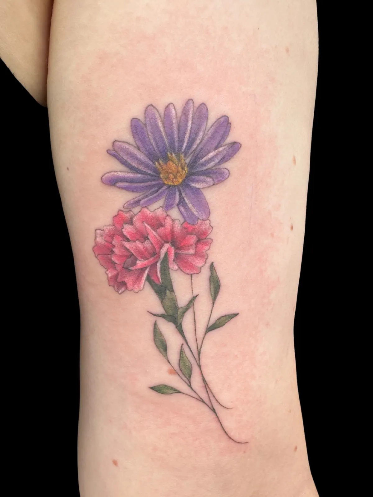
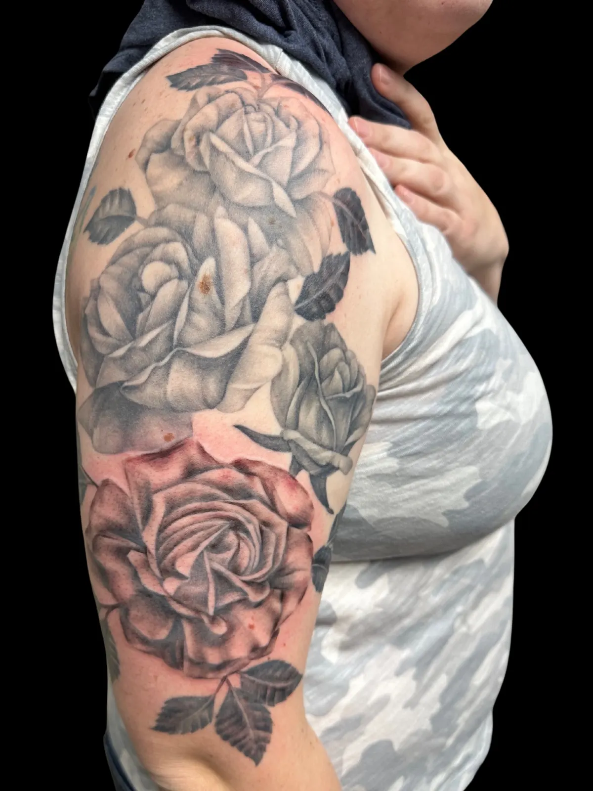
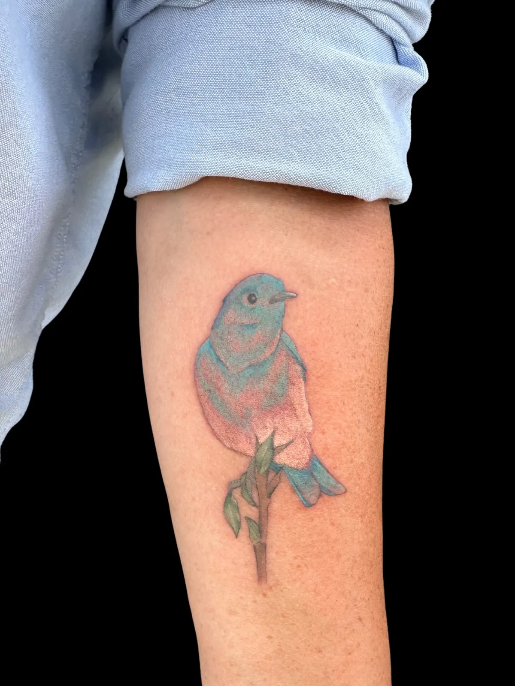
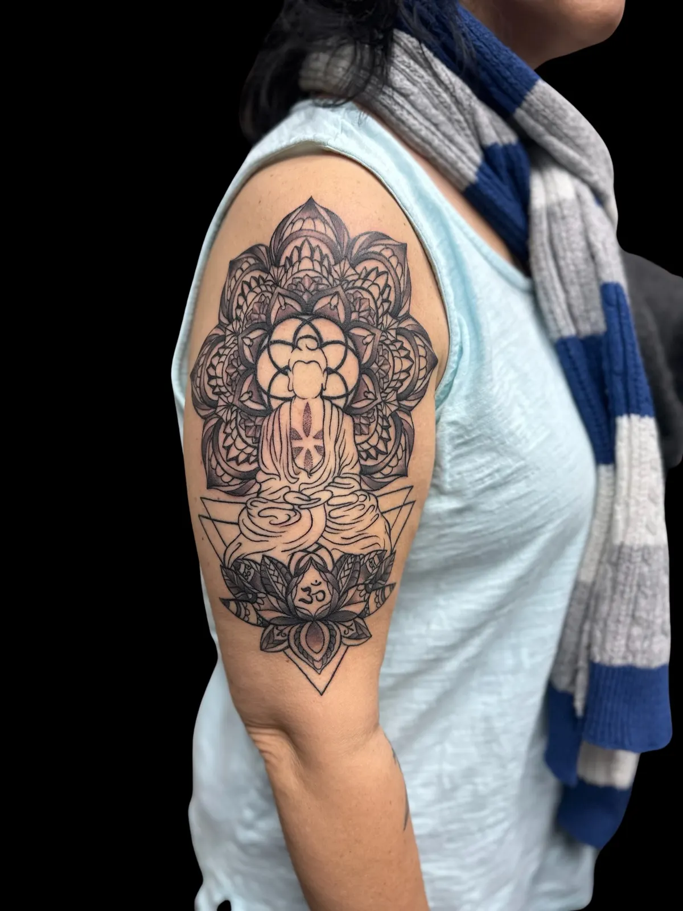

Custom Tattoos in Dublin & Columbus, Ohio
Everything I tattoo is drawn for the person wearing it. No flash sheets, no repeats, no pulling someone else's design off Pinterest. You bring the concept and the meaning; I build it for your body, at a size and in a style that will still read clearly in ten years.
I work out of a private studio inside AION Tattoo on Sawbury Blvd in Dublin — about twenty minutes from downtown Columbus. Watercolor is my signature, but I also work in botanical, fine line, and black & grey, and most pieces end up blending two of them.
The styles I work in
Watercolor
Loose colour, soft bleeds, the look of pigment moving through water. This is what I am known for. The thing that makes it last is what sits underneath — I anchor watercolour with linework or shading so it holds its shape as it ages. Colour that floats with no structure is what fades into a bruise.
Botanical
Florals, leaves, branches, and natural forms — in full colour or black & grey. Botanicals wrap a limb well, which makes them forgiving on forearms, calves and shoulders, and they scale from a single stem to a half sleeve without the composition falling apart.
Fine line
Delicate, precise, minimal. Beautiful work, and the style with the least margin for error — thin lines spread as they heal, so spacing matters more than it looks like it should. I will tell you honestly if a design needs to go up in size to survive as fine line.
Black & grey
Shading, contrast and depth with no colour. It ages the most predictably of anything I do, and it suits portraits, animals, and heavier subject matter. Often the right answer when someone wants something that reads as serious rather than decorative.






More work on the portfolio and on Instagram at @raw.sun.art.
Sizing and placement
Size drives price more than anything else, and placement drives whether a design works at all. A piece that looks right flat on paper can fight the body it is going on — forearms and calves curve, ribs stretch, hands and fingers move constantly and hold ink poorly.
Two things worth knowing before you settle on a size:
- Under about two inches, fine detail blurs. Ink spreads slightly in skin over the years and closely spaced lines close up. If you want something small, I would rather simplify the design than shrink it.
- Detail needs room. If a concept has a lot going on, sizing up is usually cheaper in the long run than sizing down and re-working it later.
Tell me roughly what you are picturing — a silver dollar, a palm, a forearm — and where on the body. I will tell you if it works, and what I would change if it does not.
What it costs
My rate is $250 an hour with a one-hour minimum. Larger pieces are usually project-quoted rather than billed hourly, so you know the number before we start rather than watching a clock. Here is roughly where things land:
| Range | Typically |
|---|---|
| $250 – $400 | Small to medium single-session pieces |
| $400 – $700 | Most single-session work with colour or detail |
| $700 – $1,200 | Large single pieces or a long session |
| $1,200+ | Half sleeves and multi-session projects |
These are ranges, not a menu — you get a real quote from your actual concept, size and placement. A $100 deposit reserves my drawing time for the piece we agreed on and comes off your final price.
How booking works
- Send your ideaFill in the inquiry form with your concept, rough size, placement and budget. References welcome — email images to lacey@rawsunart.com.
- I review and quoteI read every inquiry myself and come back with a real number and any changes I would suggest for how it will age.
- Deposit locks the designYour $100 deposit reserves my time to design the piece we agreed on. It comes off your final price. Widening the scope later means a fresh quote.
- Appointment dayWe go through the design together before anything touches skin. There is room to adjust then — that is the point of doing it in person.
Cancellations need at least 48 hours notice or the deposit is forfeited. It is not refundable or transferable for a no-show, because that time was held for you and the drawing was already done.
Healing, briefly
You will go home with specific aftercare instructions for your piece — follow those over anything you read online. In general: keep it clean, keep it moisturised, keep it out of the sun, and do not pick at it. Sun is what ages a tattoo fastest, and that goes double for colour work.
If something looks wrong while it is healing, message me. I would rather look at a photo and tell you it is normal than have you worry about it for a week.
Questions I get a lot
How much does a tattoo cost?
My rate is $250 an hour with a one-hour minimum, and larger pieces are usually project-quoted rather than billed hourly. Most single-session work lands between $250 and $700. Half sleeves and multi-session projects run $1,200 and up. You get a real number before you commit — I quote from your concept, size and placement, not from a price list.
Can I see a sketch before I book?
No — design happens after the deposit, not before. The $100 deposit is what reserves my drawing time for the piece we agreed on, and it comes off your final price. Once you are booked we go through the design together before any ink touches skin, and there is room to adjust it then.
Is the deposit refundable?
The $100 deposit comes off the price of your tattoo as long as you come in as scheduled. It is not refundable or transferable if you no-show, and cancellations need at least 48 hours notice or the deposit is forfeited. That time was held for you and the design was already drawn.
Will you copy a tattoo I found online?
I do not copy another artist's work. Bring references — I want to see what you are drawn to — but I interpret them into something built for you and for your body. That is the whole point of custom work, and it is also why the piece will not turn up on somebody else.
Does watercolor fade faster than other tattoos?
Pure watercolor with no structure underneath does soften faster, which is why I anchor mine with linework or shading. Built that way, a watercolor piece holds like any other tattoo. Any artist promising floating color with no anchor is showing you a fresh photo, not a healed one.
How small can a tattoo be?
Fine detail under about two inches tends to blur as it heals — ink spreads slightly in the skin over the years and closely spaced lines close up. If you want something small I would rather simplify the design than shrink it. You get a piece that still reads in ten years instead of a smudge.
Do you tattoo clients travelling from Columbus?
Constantly. The studio is inside AION Tattoo on Sawbury Blvd in Dublin, about twenty minutes from downtown Columbus, with free parking at the door. Clients regularly drive in from Worthington, Powell, Hilliard, Upper Arlington, Westerville and Delaware.
Ready when you are. Send the concept, the rough size, and where you want it — I will come back with a real quote.
Start Your Inquiry See Fine Art & PrintsPrivate studio inside AION Tattoo · 2719 Sawbury Blvd, Dublin, OH 43235
614-858-5574 · lacey@rawsunart.com · @raw.sun.art